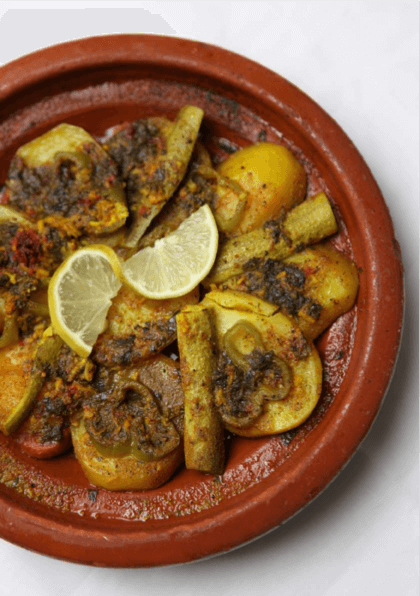

VEGETABLE TAGINE

Info
Serves 2 The tagine is by far the most popular cooking item in Morocco. No matter where you are in the country, you will find one in the kitchen. The word “tagine” specifically refers to a clay pot with a cone-shaped lid that slowly cooks meats and vegetables until they are moist and oh so tender.
ingredients
- 1 large red onion
- 1 tomato
- 2 carrots
- 1 potato or turnip
- 1 courgette or squash 1⁄2 a bell pepper
- 3 glugs of olive oil
- 2 teaspoons ground ginger
- 2 teaspoons turmeric
- 1 teaspoon paprika
- 1⁄8 teaspoon ground saffron
- 3 garlic cloves
- A small handful of chopped fresh parsley and coriander
- Salt and pepper, to taste
Steps
- Slice the red onion, tomato, carrots, bell pepper, and peeled potato/turnip. Quarter the courgette/squash. Arrange the red onion on the bottom of a medium-sized tagine, and top with the rest of the vegetables. Then, grab a glass and pour in 125 millilitres of water. Mince the garlic and add it to the water with the spices, parsley, coriander, and a few glugs of olive oil. Give it a good stir, then pour atop the tagine. Cover and cook over medium-high heat for about an hour, or until the vegetables are cooked through. Garnish with a slice of lime and serve warm with khobz.